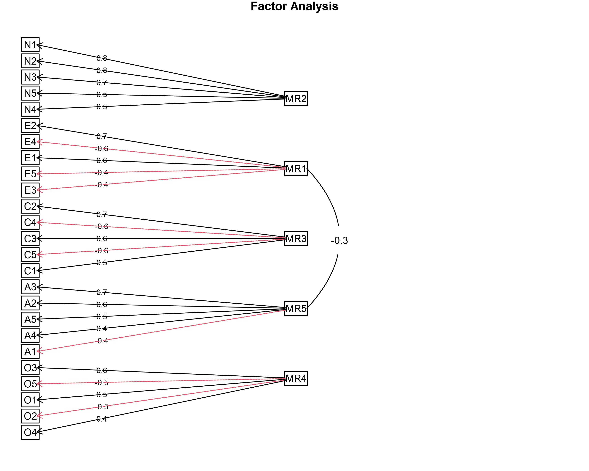
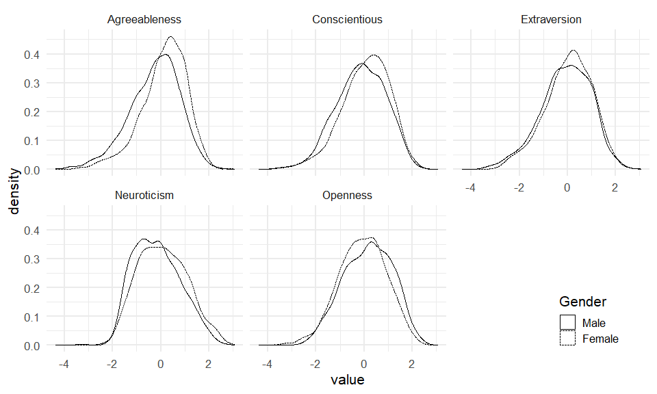

mifa implements multiple imputation of covariance matrices to allow exploratory factor analyis of incomplete data.
It works as follows:
Impute missing values multiple times using Multivariate Imputation with Chained Equations (MICE) from the mice package.
Combine the covariance matrices of the imputed data sets into a single covariance matrix using Rubin’s rules[1].
Use the combined covariance matrix for exploratory factor analysis.
mifa also provides two types of confidence intervals for the variance explained by different numbers of principal components:
Fieller confidence intervals (parametric) for larger samples[2]
Bootstrapped confidence intervals (nonparametric) for smaller samples[3]
Reference for mifa
Nassiri, V., Lovik, A., Molenberghs, G., Verbeke, G. (2018) On using multiple imputation for exploratory factor analysis of incomplete data. Behavior Research Methods 50, 501–517. https://doi.org/10.3758/s13428-017-1013-4
Note: The paper was accompanied by an implementation of mifa appears to have been abandoned by the author. You can find it here.
Installation
You can install the the stable release version of mifa from GitHub with:
# install.packages("devtools")
devtools::install_github("teebusch/mifa")You can also install the the developmental version of mifa with:
# install.packages("devtools")
devtools::install_github("teebusch/mifa@dev")Usage
As an example, we use the bfi data set from the psych package. It contains 2,800 subjects’ answers to 25 personality self-report items and 3 demographic variables (sex, education, and age). The 25 columns with responses to personality questions correspond to 5 putative personality factors, as indicated by their names: Agreeableness, Conscientiousness, Extraversion, Neuroticism, Openness. There are missing responses for most items.
First, we use mifa() to impute the covariance matrix and get an idea how many factors we should use:
library(mifa)
library(psych)
#> Warning: package 'psych' was built under R version 4.0.3
mi <- mifa(
data = bfi,
cov_vars = -c(gender, education, age),
n_factors = 2:8,
ci = "fieller",
print = FALSE
)
summary(mi)
#> Imputed covariance matrix of 25 variables
#>
#> Variable: A1 A2 A3 A4 A5 C1 C2 C3 C4 C5 E1 E2 E3 E4 E5 N1 N2 N3 N4 N5 O1 O2 O3 O4 O5
#> N Imputed: 16 27 26 19 16 21 24 20 26 16 23 16 25 9 21 22 21 11 36 29 22 0 28 14 20
#>
#> Number of MICE imputations: 5
#> Additional variables used for imputations:
#> gender education age
#>
#> Cumulative proportion of variance explained by n eigenvectors:
#>
#> n prop Fieller CI
#> 2 0.33 [0.32, 0.34]
#> 3 0.41 [0.40, 0.42]
#> 4 0.48 [0.47, 0.49]
#> 5 0.54 [0.53, 0.55]
#> 6 0.59 [0.58, 0.59]
#> 7 0.62 [0.61, 0.63]
#> 8 0.66 [0.65, 0.66]It looks like 5 factors explain more than half of the variance, so we perform a factor analysis with 5 factors, using the fa() function from the psych package.
fit <- fa(
mi$cov_combined,
n.obs = nrow(bfi),
nfactors = 5,
rotate = "varimax"
)
fit
#> Factor Analysis using method = minres
#> Call: fa(r = mi$cov_combined, nfactors = 5, n.obs = nrow(bfi), rotate = "varimax")
#> Standardized loadings (pattern matrix) based upon correlation matrix
#> MR2 MR1 MR3 MR5 MR4 h2 u2 com
#> A1 0.12 0.04 0.02 -0.41 -0.08 0.19 0.81 1.3
#> A2 0.03 0.21 0.14 0.61 0.07 0.45 0.55 1.4
#> A3 0.01 0.32 0.11 0.64 0.06 0.52 0.48 1.5
#> A4 -0.06 0.18 0.23 0.42 -0.10 0.28 0.72 2.2
#> A5 -0.11 0.39 0.09 0.54 0.06 0.46 0.54 2.0
#> C1 0.01 0.06 0.53 0.03 0.20 0.33 0.67 1.3
#> C2 0.09 0.03 0.65 0.11 0.11 0.45 0.55 1.2
#> C3 -0.02 0.02 0.55 0.12 0.00 0.32 0.68 1.1
#> C4 0.25 -0.06 -0.61 -0.04 -0.11 0.45 0.55 1.5
#> C5 0.30 -0.17 -0.55 -0.05 0.03 0.43 0.57 1.8
#> E1 0.04 -0.57 0.04 -0.10 -0.07 0.35 0.65 1.1
#> E2 0.24 -0.68 -0.09 -0.10 -0.04 0.54 0.46 1.4
#> E3 0.02 0.54 0.08 0.27 0.27 0.44 0.56 2.1
#> E4 -0.10 0.64 0.10 0.30 -0.08 0.53 0.47 1.6
#> E5 0.03 0.50 0.32 0.09 0.21 0.41 0.59 2.2
#> N1 0.77 0.08 -0.04 -0.22 -0.08 0.66 0.34 1.2
#> N2 0.75 0.03 -0.03 -0.19 -0.02 0.60 0.40 1.1
#> N3 0.73 -0.06 -0.07 -0.03 0.00 0.55 0.45 1.0
#> N4 0.59 -0.33 -0.17 0.00 0.07 0.49 0.51 1.8
#> N5 0.54 -0.15 -0.04 0.10 -0.15 0.35 0.65 1.4
#> O1 0.01 0.22 0.12 0.06 0.50 0.31 0.69 1.5
#> O2 0.19 0.00 -0.10 0.09 -0.45 0.25 0.75 1.5
#> O3 0.02 0.30 0.08 0.13 0.59 0.46 0.54 1.7
#> O4 0.23 -0.18 -0.01 0.15 0.38 0.25 0.75 2.6
#> O5 0.10 -0.01 -0.06 -0.02 -0.53 0.30 0.70 1.1
#>
#> MR2 MR1 MR3 MR5 MR4
#> SS loadings 2.69 2.43 1.97 1.79 1.48
#> Proportion Var 0.11 0.10 0.08 0.07 0.06
#> Cumulative Var 0.11 0.20 0.28 0.36 0.41
#> Proportion Explained 0.26 0.23 0.19 0.17 0.14
#> Cumulative Proportion 0.26 0.49 0.68 0.86 1.00
#>
#> Mean item complexity = 1.5
#> Test of the hypothesis that 5 factors are sufficient.
#>
#> The degrees of freedom for the null model are 300 and the objective function was 7.23 with Chi Square of 20166.68
#> The degrees of freedom for the model are 185 and the objective function was 0.66
#>
#> The root mean square of the residuals (RMSR) is 0.03
#> The df corrected root mean square of the residuals is 0.04
#>
#> The harmonic number of observations is 2800 with the empirical chi square 1438.57 with prob < 9.4e-193
#> The total number of observations was 2800 with Likelihood Chi Square = 1834.77 with prob < 3.9e-269
#>
#> Tucker Lewis Index of factoring reliability = 0.865
#> RMSEA index = 0.056 and the 90 % confidence intervals are 0.054 0.059
#> BIC = 366.35
#> Fit based upon off diagonal values = 0.98
#> Measures of factor score adequacy
#> MR2 MR1 MR3 MR5 MR4
#> Correlation of (regression) scores with factors 0.92 0.88 0.86 0.84 0.82
#> Multiple R square of scores with factors 0.85 0.77 0.73 0.70 0.68
#> Minimum correlation of possible factor scores 0.70 0.53 0.47 0.40 0.35The plot below shows that the five factors have been recovered quite well:
fa.diagram(fit)
Once we have the estimated covariance matrix, we can perform a factor analysis as usual. For example, we can add the factor scores to the original data, and visualize them:
# impute a single data set with mice, so we can obtain factor scores for inclomplete cases
data_imp <- mice::complete(mice::mice(bfi, 1, print = FALSE))
# get factor scores for original data
fct_scores <- data.frame(factor.scores(data_imp[, 1:25], fit)$scores)
data_imp <- data.frame(
Gender = factor(data_imp$gender),
Extraversion = fct_scores$MR1,
Neuroticism = fct_scores$MR2,
Conscientious = fct_scores$MR3,
Openness = fct_scores$MR4,
Agreeableness = fct_scores$MR5
)
levels(data_imp$Gender) <- c("Male", "Female")
library(ggplot2)
library(tidyr)
data_imp <- tidyr::pivot_longer(data_imp, -Gender, "factor")
ggplot(data_imp, aes(value, linetype = Gender)) +
geom_density() +
facet_wrap(~ factor, nrow = 2) +
theme(legend.position = c(.9, .1))
[1] Rubin D. B. Multiple imputation for nonresponse in surveys (2004). John Wiley & Sons
[2] Fieller, E. C. (1954). Some problems in interval estimation. Journal of the Royal Statistical Society. Series B (Methodological): 175-185.
[3] Shao, J. & Sitter, R. R. (1996). Bootstrap for imputed survey data. Journal of the American Statistical Association 91.435 (1996): 1278-1288. https://dx.doi.org/10.1080/01621459.1996.10476997